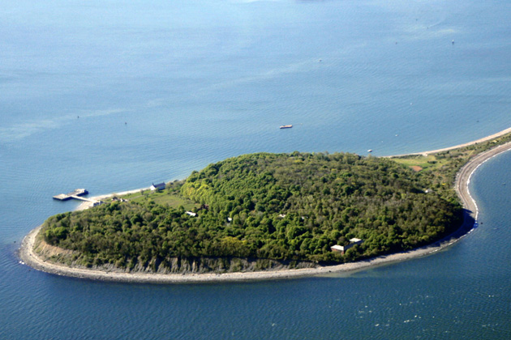

Shutter Island
Main Content

Ominous chords as Federal Marshall Teddy Daniels (Leonardo DiCaprio) and his new partner Chuck Aule (Mark Ruffalo) arrive at ‘Shutter Island’, in ‘Boston Harbor’, to investigate the disappearance of a dangerous patient. Martin Scorsese’s Gothic thriller is based on the novel by Dennis Lehane, the writer of Boston-set stories Gone Baby Gone and Mystic River.
The first glimpse of the sheer-sided rock rising from the ocean is computer enhanced, but the rocky coastline itself is Peddocks Island, which indeed can be found in Boston Harbor, off the coast of Quincy, south of the city. Composed of four headlands, connected by sand or gravel bars called tombolos, Peddocks is one of the largest islands in the harbor. The landing pier is on the northeast coast, by the remaining buildings of Fort Andrews, which can be seen as the party comes ashore.
The main building and the first two wards of ‘Ashecliffe Hospital for the Criminally Insane’ are the disused Medfield State Hospital, 45 Hospital Road in Medfield, on the mainland about 20 miles southwest of Boston. Added to the National Register of Historic Places in 1994, the property was closed in April 2003, the buildings shuttered and their future use uncertain. The complex was also seen in Richard Kelly’s The Box.
Our idea of what a Victorian-era psychiatric hospital looks like – Gothic brick architecture and expansive lawns – come largely from the designs of a 19th Century doctor called Thomas Story Kirkbride, whose concept was to provide Cathedral-like sanctuaries for the mentally ill that would give them a peaceful, elegant and morally-ordered environment. Medfield was not designed by Kirkbride himself, but it very much conforms to his principles, though Production Designer Dante Ferretti added plenty of his own touches. Ashecliffe’s main building is Medfield’s chapel, but the imposing entrance seen in the film is a fake added to the side of the building (there’s no door there at all).
The precisely neat lawns and flowerbeds were also added for the film, as were the high-security ‘brick’ walls surrounding the compound. ‘Ward C’, the grim old fort used to house the most dangerous patients, is a CGI addition.
The hospital’s imposing executive mansion is the Turner Hill Golf Club, 251 Topsfield Road, Ipswich, where Teddy and Chuck exchange pointed banter with Dr Cawley (Ben Kingsley) and Dr Naehring (Max Von Sydow) in its baronial, wood-lined sitting room, dominated by the oversized fireplace.
You might recognise the place as the wedding venue, scene of the excruciating reception, in Kristoffer Borgli's 2026 The Drama and as the 'Lenox Mansion' in The Witches of Eastwick.
It’s over to Wilson Mountain Reservation, a 213-acre reservation and state park in Dedham just off Route 128, between Medfield and Boston, for the woods where Teddy and Chuck are caught in the storm as the hurricane hits the island.
Don’t plan to visit, the hospital’s sinister lighthouse – it never existed. A 20-feet-tall base was built on the rocky shore east of the Northeastern University Marine Science Center at East Point, in Nahant, on a promontory a few miles northeast of Boston. The upper section was computer generated.
While in Nahant, the interior of a nearby public works building atop East Point was transformed into the bathroom of the ferry, where Teddy Daniels gets seriously seasick on the voyage to Shutter island.
If that’s not complicated enough, the vertiginous rockface Teddy must negotiate to reach the lighthouse is Otter Cliff, a couple of hundred miles northeast on the east coast of Mount Desert Island in Acadia National Park, Bar Harbor, Maine.
And when the water at Maine turned out not to be turbulent enough for the drama, shots of the sea crashing on rocks off the coast of Big Sur, central California, were added to the mix to provide the base for the lighthouse.
Whittenton Mills, 437 Whittenton Street, Taunton, in reality an abandoned textile mill almost 40 miles south of Boston, was transformed into a section of the ‘Dachau’ concentration camp, where Teddy experiences a lasting trauma.
The deceptively idyllic lakeside cottage at which, in flashback, the central shocking murder takes place, is about ten miles to the north. It’s the stone lodge on Leach Pond in the Borderland State Park, 259 Massapoag Avenue, in North Easton.
Visit Info
Visit The Film Locations
Massachusetts | Boston
Visit: Massachusetts
Visit: Boston
Flights: Logan International Airport, 1 Harborside Drive, Boston, MA 02128 (tel: 800.235.6426)
Travel around: MBTA (Massachusetts Bay Transportation Authority)
Visit: Peddocks Island
Visit: Turner Hill Golf Club, 251 Topsfield Road, Ipswich, MA 01938 (tel: 978.356.7070)
Visit: Wilson Mountain Reservation, 384 Common Street, Dedham, MA 02026 (tel: 617.698.1802)
Visit: Borderland State Park, 259 Massapoag Avenue, North Easton, MA 02356 (tel: 508.238.6566)
Maine
Visit: Maine
Visit: Acadia National Park, Bar Harbor, Mt Desert, ME 04660 (tel: 207.288.3338)
Visit: Otter Cliff
California
Visit: California
Visit: Big Sur